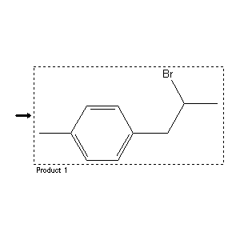

|  |
| FA | RX(1); FLST(1); RX(1) |
Reaction (1 of 1)
| Reaction ID | 7625294 |
| Product BRN | 2501175 |
| Product | 2-bromo-1-(4-tolyl)-propane |
| No. of Reaction Details | 1 |
Reaction Details (1 of 1)
| Reaction Classification | Preparation (half reaction) |
| Citation Pointer | 4671163; Journal; Gelli et al.; ANCRAI; Ann.Chim.(Rome); 54; 1964; 1143,1146;4799415; Journal; Farkhadov et al.; DAZRA7; Dokl.Akad.Nauk Az.SSR; 29; 4; 1973; 18; Chem.Abstr.; 80; 108079y; 1974; |
Reference (1 of 2)
| Citation Number | 4671163 |
| Document Type | Journal |
| Authors | Gelli et al. |
| CODEN | ANCRAI |
| Journal Title | Ann.Chim.(Rome) |
| (Series) Volume | 54 |
| Publication Year | 1964 |
| Page | 1143,1146 |
Reference (2 of 2)
| Citation Number | 4799415 |
| Document Type | Journal |
| Authors | Farkhadov et al. |
| CODEN | DAZRA7 |
| Journal Title | Dokl.Akad.Nauk Az.SSR |
| Journal/Review Without CODEN | Chem.Abstr. |
| (Series) Volume | 29; 80 |
| Number | 4; 108079y |
| Publication Year | 1973; 1974 |
| Page | 18 |